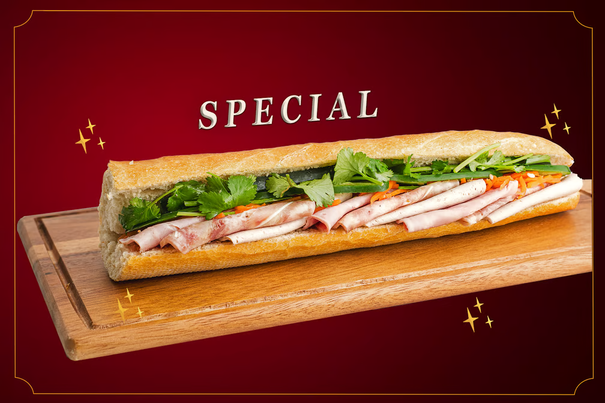

Specialty Banh Mi:

Ingredients:
- Cilantro
- Vietnamese Red Pork Jambon (Thit Do)
- Flower© Pate
- Vietnamese Mayonnaise
- French Sesame Baguette
- Cucumbers
- Green Chili Peppers
- Head cheese (Not actually cheese)
- Vietnamese Pickled Daikon and Carrots
Instructions:
Ingredient Preparation
- Reheat Baguette
- Cut open Baguette
- Thinly slice your head cheese
- Thinly slice your Vietnamese pork ham
- Horizontally slice your cucumbers
- Slice green chili into circles
Assembly
- Spread Vietnamese mayo onto both sides of the baguette
- Open Pate Can
- Spread Pate onto both sides of Baguette
- Add the folded slices of head cheese and Vietnamese ham, alternating between each type
- Add Pickled Veggies on top of sliced meats
- Add Cilantro on top of Pickled Veggies
- Add Cucumber on top of Pickled Veggies
- Optional Add Sliced Chili on top of Cucumbers